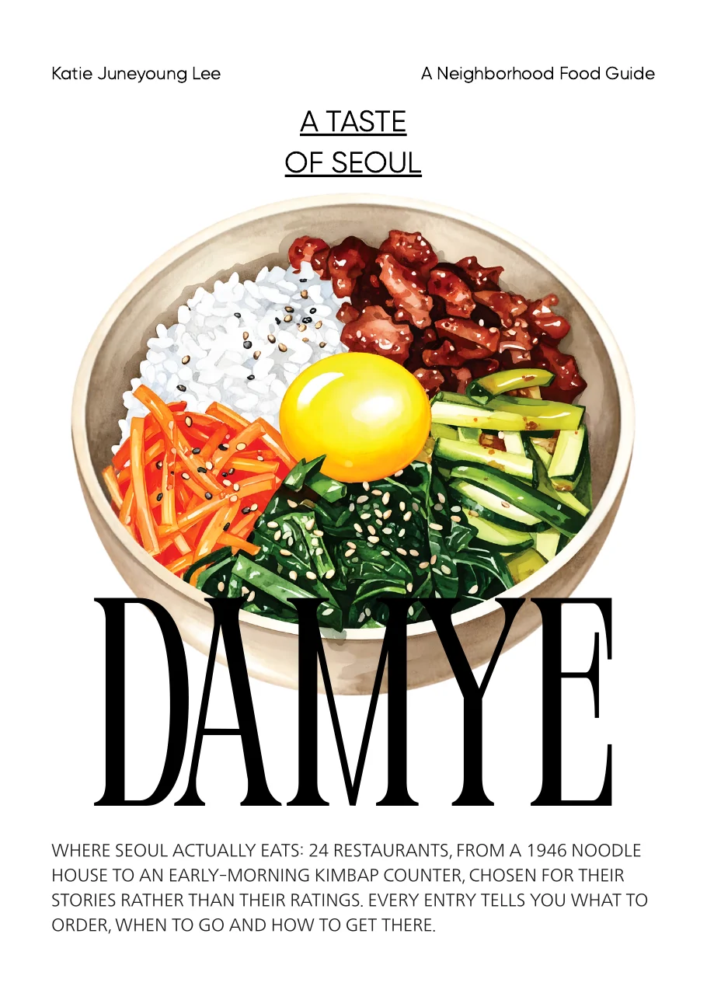

Damye: A Taste of Seoul
Where Seoul actually eats: 24 independent restaurants, from a 1946 noodle house to an early-morning kimbap counter, chosen for their stories rather than their ratings. Every entry tells you what to order, when to go and how to get there.
PDF · 34 pages · 3.2 MB
What every entry gives you
Each restaurant gets its own page, laid out the same way, so you can flip to it on the subway and know exactly what to do.
The story
How the restaurant started, who runs it and the part it plays in its neighborhood.
What to order
The dishes to get, with Korean names you can point to or show the staff.
When to go
When lines are shortest, break times and closed days, plus opening hours.
Getting there
The nearest subway station and exit, and the address in English and Korean.
24 restaurants, four neighborhoods
The book is grouped by part of the city, so you can plan a day around one neighborhood and eat your way across it.
PART 1 · 7 RESTAURANTS
Old Seoul
Jongno · Jung-gu · Sindang-dong
PART 2 · 4 RESTAURANTS
Yongsan
Namyeong-dong · Haebangchon · Hannam-dong
PART 3 · 5 RESTAURANTS
Seocho
Jamwon-dong · Seorae Village · Banpo · Yangjae
PART 4 · 8 RESTAURANTS
Gangnam
Apgujeong · Nonhyeon · Daechi · Dogok